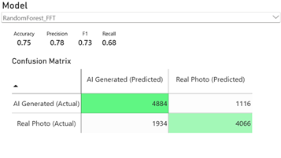
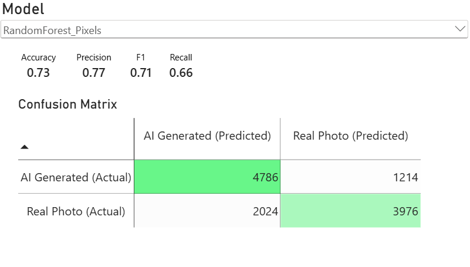
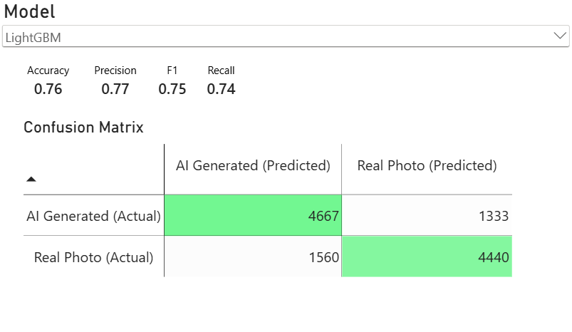
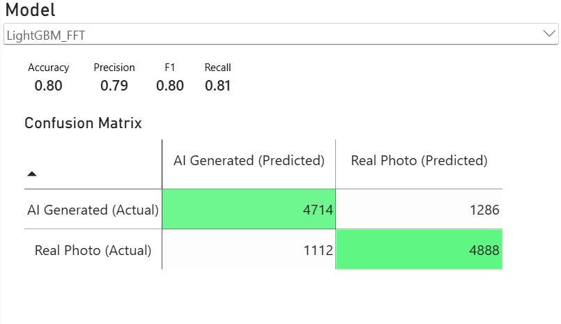
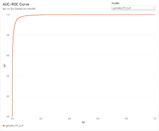

1. Introduction:
The rapid development of generative models such as GANs, diffusion models, and their descendants has allowed many AI-generated imagery to appear across the internet. In addition, AI-images have progressed to a point where humans are not able to discern whether an image is real or AI-generated. This study tests whether classical machine learning and deep learning approaches can reliably distinguish real photographs from AI-generated images when both are drawn from the same dataset. Six models were trained and validated on a set of 48,000 images (24,000 real and 24,000 AI-generated) and then tested using a set of 12,000 images (6,000 real and 6,000 AI-generated). These span three feature strategies: raw pixel values, hand-crafted frequency-domain features (FFT), and semantic embeddings from CLIP.
2. Methodology:
All models were trained and tested on the same image dataset. Images were resized to 300×300 pixels. Grayscale conversion was applied for the tabular models; the Neural Network used full RGB. The class distribution is perfectly balanced with a total of 30,000 real and 30,000 fake. 80% of the fake and real images were used for training and validation, and the remaining 20% was used for testing the results.
Three input representations were compared:
· Raw pixels: flattened 300×300 grayscale arrays (90,000 features) or RGB arrays for the Neural Network
· Pixel + FFT: the same pixel vector concatenated with 23 hand-crafted frequency features. global magnitude statistics, four radial frequency-band energies, and row/column spectral profile bins. These features are designed to expose periodic up sampling artifacts characteristic of GAN and diffusion decoders.
· FFT + CLIP: the 23 FFT features concatenated with a 512-dimensional CLIP embedding (ViT-B/32, LAION-2B checkpoint), producing a 535-dimensional semantic + spectral feature vector.
The models that were tested in this study are the following:
· Random Forest: Classical Ensemble using raw pixels
· Random Forest_FFT: Classical Ensemble using raw pixels and FFT
· LightGBM: Gradient Boosting using raw pixels
· LightGBM_FFT: Gradient Boosting using raw pixels and FFT
· LightGBM_FFT_CLIP: Gradient Boosting using FFT and CLIP
· Neural Network: CNN that uses raw RGB pixels
All models were evaluated using accuracy, precision, recall F1, ROC AUC, specificity, balanced accuracy, and the four confusion-matrix components (TP, FP, TN, FN). Figures 1-6 display the confusion matrices while figures 7-12 display the ROC curves
3. Results:
3.1 Performance Summary
|
Model |
Accuracy |
Precision |
Recall |
F1 |
AUC |
Specificity |
|
RandomForest_ |
0.7302 |
0.7661 |
0.6627 |
0.7106 |
0.8127 |
0.7977 |
|
RandomForest_FFT |
0.7458 |
0.7846 |
0.6777 |
0.7272 |
0.8334 |
0.8140 |
|
LightGBM |
0.7589 |
0.7691 |
0.7400 |
0.7543 |
0.8447 |
0.7778 |
|
LightGBM_FFT |
0.8002 |
0.7917 |
0.8147 |
0.8030 |
0.8894 |
0.7857 |
|
LightGBM_FFT_CLIP |
0.9596 |
0.9521 |
0.9678 |
0.9599 |
0.9928 |
0.9513 |
|
Neural Network |
0.8648 |
0.8549 |
0.8787 |
0.8666 |
0.9379 |
0.8508 |
AUC ranges from 0.813 to 0.993, giving a difference of 0.18. Every model performs meaningfully better than chance, which validates the dataset and the training pipeline.
3.2 FFT Improvements
Adding FFT features to the raw pixels yields measurable gain for each model that was applied to. Random Forest and LightGBM had an increase of 1.56% and 4.13% in accuracy respectively. There was a larger gain for LightGBM as expected due to gradient boosting being able to capitalize on a small set of highly informative features.
3.3 Neural Network
The CNN trained on raw RGB pixels outperformed both Random Forest and LightGBM variants (excluding LightGBM_FFT_CLIP). Despite having no explicit access to frequency features, this confirms that convolutional layers learn their own spatial and spectral filters from data, making hand crafted FFT features redundant for a sufficiently deep model.
3.4 CLIP features
Replacing raw pixel input with CLIP embeddings resulted in a 15% increase in Accuracy when comparing LightGBM_FFT to LightGBM_FFT_CLIP. No other model comes close to the performance of this model.
4. Confusion Matrix Analysis:
Figures 1-6 present the confusion matrices for each model. A clear pattern lies in the asymmetry between false positives and false negatives across the different models:
· Random Forest Models: Random Forest models tend to produce more false negatives than false positives. It is biased towards predicting an image is “real”.
· LightGBM Models: LightGBM models tend to produce more balanced results with relatively similar number of false negatives and false positives.
· Neural Networks: The Neural Network model tends to produce more false positives than false negatives. It is biased towards predicting an image is AI-generated.
· LightGBM_FFT_CLIP: achieves 5,807 true positives and 5,708 true negatives, leaving only an error rate of 4.04%. The confusion matrix is nearly diagonal. There are slightly fewer false negatives than false positives, giving the model a small conservative tilt that is unlikely to matter in practice.
5. ROC Curve Analysis:
Figures 7 to 12 show the ROC curves for all six models. There are three observations that stand out. First observation is that the curves are well-separated where there is no ambiguity in the ranking for performance. LightGBM_FFT_CLIP model dominates every other model. There is no point where a weaker model is more preferable. Second, we notice that the LightGBM_FFT_CLIP model has a ROC curve that rises almost vertically at a low false positive rate from 0.01 to 0.85. This means at 0.01 or 1% false positive rate, the model already catches around 85% of AI images. LightGBM_FFT at the same FPR catches only around 40% while Random Forest with raw pixels catches at most 25%. Thirdly, all models aside from the weakest model reaches 100% TPR before 100% FPR. The right most points on every curve end at point (1, 1), but the most useful operating region is the upper-left corner. The LightGBM_FFT_CLIP’s curve hugs the top-left corner tightly that its AUC value of 0.9928 leaves almost no room for improvement. The remaining 0.72% of AUC reflects the misclassifications on a small number of genuinely ambiguous images.
6. Discussion:
The result of this project supports several conclusions that generalize beyond this specific dataset. First, feature quality plays a larger factor in accuracy compared to model choice. Adding gradient boosting classifier on CLIP features outperforms a CNN on raw pixels by around 9%. In addition, the addition of frequency features, which are cheap, are effective in increasing a model’s performance. Adding FFT features on top of a gradient boosting model achieved 80% accuracy and 0.889 AUC with no deep learning needed. Nevertheless, classical models remain competitive when given good input where the simplest model still achieved 73% by just using raw pixels as input. Finally, the confusion matrices reveal the distribution of false positives and false negatives for each model. Some models tended to flag more false positives such as Random Forest and some models tended to flag more false negatives such as Neural Networks. When deploying a system, this matters as much as headline accuracy. The choice of the model should be guided not only by how often the model is wrong but by what type of wrong it tends to be.
7. Conclusion:
Six models were evaluated with a balanced 12,000 image test set for the task of distinguishing real from AI-generated images. The best-performing model was gradient boosting on FFT + CLIP features which achieved 95.96% accuracy and 0.993 ROC AUC. Out of the 12,000 images, only 485 images were flagged incorrectly. The weakest model was Random Forest on raw pixels where it achieved an accuracy of 73.02% and a 0.813 AUC.
A major finding in this project is that the gap between the results is explained by choices of features. CLIP embeddings accounted for a 16% accuracy improvement over the best non-CLIP model. FFT features also provide a smaller but consistent secondary improvement across all classic models.
Future work should focus on testing more up to date image generation models to see whether the current models are still capable of discerning AI-generated and human crafted images. In addition, some testing is required to see whether the models’ ability to discern images created by AI-generators they were never trained on.
Figures:
 

Figure 1 Figure 2 Figure 3 Figure 4

Figure 5 Figure 6
 

Figure 7 Figure 8 Figure 9 Figure 10

Figure 11 Figure 12